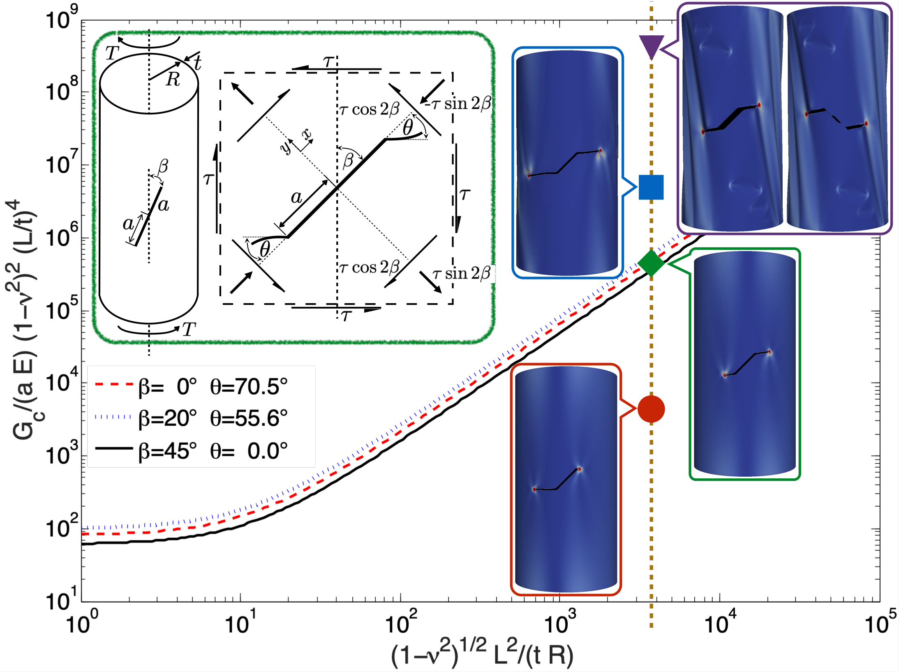

Clases
- Programa de Mecánica de los Sólidos
- Unidad 0
- Unidad 1
- Unidad 2
- Unidad 3
- Unidad 4
- Unidad 5
Scripts ejemplos
Competencia entre modos de falla

Ver película en web.

Competencia entre propagación de fractura y pandeo en una cáscara cilíndrica frágil empotrada en sus extremos sometida a torsión. En la figura se representan las curvas que delimitan la transición entre estos estados de falla de acuerdo a los parámetros geométricos, materiales, y del ángulo y longitud de la fractura inicial. En particular es posible observar que dada una cáscara cilíndrica con geometría constante, con una fractura inicial β = 45º, es posible observar la transición desde un fallo por propagación de fractura a otro donde antes ocurre el pandeo de la estructura, esto se logra modulando la relación adimensional Gc/(tE) desde 10-7 a 10-2 (desde abajo hacia arriba).
Ver película en web.


Esta obra está bajo una Licencia Creative Commons Atribución-NoComercial-CompartirIgual 4.0 Internacional